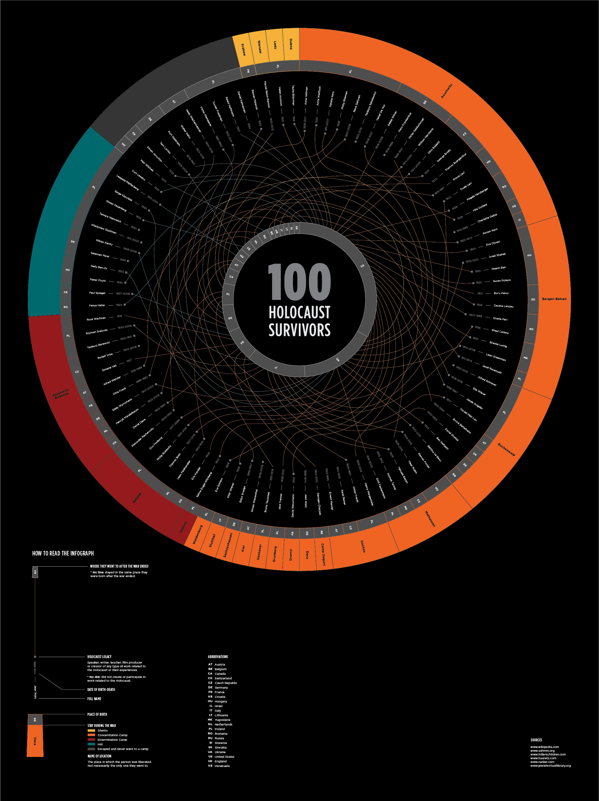

Explore the concepts of data, information, knowledge and the methods of structuring, grouping, filtering, and representing data within static medium.
I researched about the subject and read all the survivor's stories in order to group them into 7 different properties. Then I created a database with all the gathered information and organized it within the properties. Then, I transferred the complex information into a visual design, playing with hierarchy and organization.
